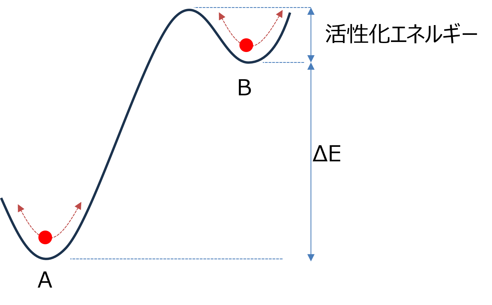

私の疑問（活性化エネルギーをどう越える？）
化学平衡論において，下図のような図がよく用いられます．

A状態とB状態にはΔEのエネルギー差があり，さらに，活性化エネルギーという障壁が存在します．
その中で，AとBを行き来する分子はゆらぎながらたまたま障壁を超えることができた場合に異なる状態に遷移できます．
私の理解では，
\( \Large k_{AB} = \omega \ exp \left[ - \lambda \frac{ \Delta E}{k_B T} \right]\)
\( \Large k_{BA} = \omega \ exp \left[ ( \lambda - 1) \frac{ \Delta E}{k_B T} \right]\)
において，ω，がこの障壁の高さ（活性化エネルギー）を表すものかな？と思っています（ここで，すでに間違っているかもしれないですが）
すると，
B → A ： 活性化エネルギー，を超えるエネルギー状態の場合，Aに遷移する
A → B ： 活性化エネルギー + ΔE，を超えるエネルギー状態の場合，Bに遷移する
となるので，B→A，の遷移においては，ΔEは関係ないことになります．
たとえて言うと，崖を上るのは崖の高さに依存するけど，崖から落ちる場合は崖の高さは関係ない．．．というように．．．
となると，λ=1，の場合，
\( \Large k_{AB} = \omega \ exp \left[ - \frac{ \Delta E}{k_B T} \right]\)
\( \Large k_{BA} = \omega \)
となるのではないか，という単純な疑問が．．．
これは，先ほど示しました，理研の川口先生，京都大学の佐々先生，東大の沙川先生の共著論文（佐野領域のニュースレターはこちら）では，λ≒０，がとは真逆の結果となります．
そもそも，
活性化エネルギーは，ΔE（もしくはEA,EB）に依存しない
という考え自体が間違いなのかもしれません．
まだ，もやもやしている状態です．